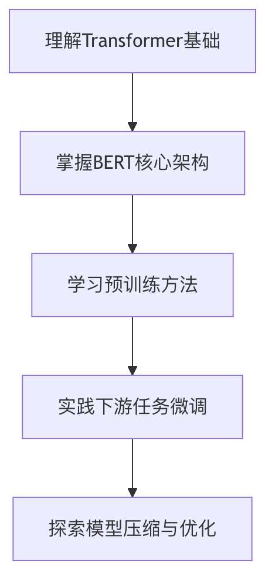

BERTシリーズモデル
BERT（Bidirectional Encoder Representations from Transformers）は2018年にGoogleによって提案された革命的な自然言語処理モデルであり、NLP分野の研究と応用のパラダイムを根本的に変えました。
本記事では、BERTの核心理念、学習方法、ファインチューニングのコツ、そして主流の変種モデルについて体系的に紹介します。
BERTのアーキテクチャと学習
次の図は示していますBERT（Bidirectional Encoder Representations from Transformers）モデルのコアアーキテクチャと、事前学習プロセスにおけるマスク言語モデリング（Masked Language Modeling, MLM）タスクを示しています。

1. 入力層（Embedding）
- 入力シーケンス：単語（またはサブワード）から構成されるテキスト。例えば
[W₁, W₂, W₃, [MASK], W₅, W₆, W₇, W₂, W₃, W₄, W₅]。[MASK]は、BERTが事前学習時にランダムにマスクした単語です（原文中のW₄に置き換えられる[MASK]）。
- Embedding 層：各単語を固定次元のベクトル表現（例：768次元）に変換します。含む：
- トークン埋め込み（Token Embeddings）：語彙の意味情報。
- 位置埋め込み（Position Embeddings）：単語のシーケンス内の位置情報。
- セグメント埋め込み（Segment Embeddings）：文を区別します（文ペアタスクに有用です。図では明示的に示されていません）。
2. Transformer エンコーダー（Transformer Encoder）
- 多層Transformerブロック：図では詳細を展開していませんが、各ブロックには以下が含まれます：
- 自己注意機構（Self-Attention）：双方向で文脈依存関係を捉えます（BERTの核となる特徴）。
- フィードフォワードネットワーク（Feed-Forward Network）：非線形変換。
- 残差接続とレイヤー正規化：学習プロセスを安定させます。
- 出力：各入力単語に対応する文脈依存のベクトル表現（例：
O₁, O₂, ..., O₅）。
3. マスク言語モデリング（MLM）タスク
- 目的：マスクされた単語を予測する
[MASK]に対応する元の単語（図中のW₄）。 - 分類層（Classification Layer）：
- 全結合層（Fully-Connected Layer）：Transformerの出力ベクトル（例：
O₄）を語彙サイズの次元にマッピングします。 - 活性化関数GELU：ガウス誤差線形ユニット（BERTが採用する非線形関数）。
- レイヤー正規化（Norm）：出力を標準化します。
- Softmax：語彙内の各単語の確率を計算し、最も確率の高い単語を予測結果として選択します（例えば
W'₁, W'₂, ..., W'₅が候補です）。
- 全結合層（Fully-Connected Layer）：Transformerの出力ベクトル（例：
Transformerエンコーダーの構造
BERTはTransformerのエンコーダー部分に基づいて構築されており、その核心は多層自己注意機構です：
例
# 簡略化されたTransformerエンコーダー層
class TransformerEncoderLayer(nn.Module):
def __init__(self, d_model, nhead, dim_feedforward=2048):
super().__init__()
self.self_attn = MultiheadAttention(d_model, nhead)
self.linear1 = nn.Linear(d_model, dim_feedforward)
self.linear2 = nn.Linear(dim_feedforward, d_model)
self.norm1 = nn.LayerNorm(d_model)
self.norm2 = nn.LayerNorm(d_model)
def forward(self, src):
# 自己注意機構
src2 = self.self_attn(src, src, src)[0]
src = src + self.norm1(src2)
# フィードフォワードネットワーク
src2 = self.linear2(F.relu(self.linear1(src)))
src = src + self.norm2(src2)
return src
class TransformerEncoderLayer(nn.Module):
def __init__(self, d_model, nhead, dim_feedforward=2048):
super().__init__()
self.self_attn = MultiheadAttention(d_model, nhead)
self.linear1 = nn.Linear(d_model, dim_feedforward)
self.linear2 = nn.Linear(dim_feedforward, d_model)
self.norm1 = nn.LayerNorm(d_model)
self.norm2 = nn.LayerNorm(d_model)
def forward(self, src):
# 自己注意機構
src2 = self.self_attn(src, src, src)[0]
src = src + self.norm1(src2)
# フィードフォワードネットワーク
src2 = self.linear2(F.relu(self.linear1(src)))
src = src + self.norm2(src2)
return src
重要な革新：双方向コンテキストモデリング
従来の言語モデルとは異なり、BERTは以下の2つの事前学習タスクを通じて双方向の文脈理解を実現します：
- Masked Language Model (MLM)：入力トークンの15%をランダムにマスクし、マスクされた単語を予測する
- Next Sentence Prediction (NSP)：2つの文が連続して出現するかどうかを判定する
学習パラメータと構成
| パラメータ | BERT-base | BERT-large |
|---|---|---|
| 層数 | 12 | 24 |
| 隠れ層サイズ | 768 | 1024 |
| アテンションヘッド数 | 12 | 16 |
| 総パラメータ数 | 110M | 340M |
BERTのファインチューニング方法
標準的なファインチューニングの流れ
- タスク適応層の追加：下流タスクに応じて分類/回帰層を追加する
- 学習率の設定：通常は小さめの学習率（2e-5から5e-5）を使用する
- バッチサイズ：16または32が一般的な選択です
- エポック数：2〜4エポックで通常十分です
効率的なファインチューニング技術
例
# HuggingFace Transformersを使用したファインチューニングの例
from transformers import BertForSequenceClassification, Trainer
model = BertForSequenceClassification.from_pretrained('bert-base-uncased')
trainer = Trainer(
model=model,
args=training_args,
train_dataset=train_dataset,
eval_dataset=eval_dataset
)
trainer.train()
from transformers import BertForSequenceClassification, Trainer
model = BertForSequenceClassification.from_pretrained('bert-base-uncased')
trainer = Trainer(
model=model,
args=training_args,
train_dataset=train_dataset,
eval_dataset=eval_dataset
)
trainer.train()
一般的なファインチューニング戦略の比較
| 方法 | 利点 | 欠点 |
|---|---|---|
| 全パラメータファインチューニング | 性能が最適 | 計算コストが高い |
| 特徴抽出（BERTを凍結） | 計算効率が良い | 性能は次善 |
| アダプター（Adapter） | パラメータ効率が良い | アーキテクチャの変更が必要 |
| プロンプト学習（Prompt） | 小サンプルでの効果が良い | プロンプトテンプレートの設計が必要 |
主流のBERT変種モデル
RoBERTa (Robustly Optimized BERT)
- 改良点：
- より大きなバッチ（8k vs 256）
- より長い学習時間
- NSPタスクの除去
- 動的マスキングモード
- 性能：GLUEベンチマークで平均2〜3%向上
ALBERT (A Lite BERT)
- 核となる革新：
- パラメータ共有（層間での注意パラメータ共有）
- 埋め込み分解（単語埋め込みを2つの小さな行列に分解）
- 効果：パラメータ数が89%減、速度が1.7倍向上
その他の重要な変種
- DistilBERT：知識蒸留によるモデル圧縮
- ELECTRA：生成器-識別器アーキテクチャでMLMを置き換え
- SpanBERT：テキストスパンのモデリングを最適化
中国語BERTモデル
中国語事前学習モデル概要
| モデル | 機関 | 特徴 |
|---|---|---|
| BERT-wwm | ハルビン工業大学 | 全単語マスキング（Whole Word Masking） |
| RoBERTa-wwm-ext | ハルビン工業大学 | 学習データの拡張 |
| ERNIE（百度） | 百度 | 知識グラフを組み込む |
| NEZHA | ファーウェイ | 相対位置エンコーディング |
中国語BERTの使用例
例
from transformers import BertTokenizer, BertModel
tokenizer = BertTokenizer.from_pretrained('bert-base-chinese')
model = BertModel.from_pretrained('bert-base-chinese')
inputs = tokenizer("自然言語処理はとても面白い", return_tensors="pt")
outputs = model(**inputs)
tokenizer = BertTokenizer.from_pretrained('bert-base-chinese')
model = BertModel.from_pretrained('bert-base-chinese')
inputs = tokenizer("自然言語処理はとても面白い", return_tensors="pt")
outputs = model(**inputs)
中国語タスクのファインチューニングに関する提案
- 全単語マスキング（wwm）バージョンを使用すると効果が良い
- 中国語の分かち書き境界の問題に注意する
- 専門分野の場合は、ドメイン適応型事前学習を検討する
実践的なアドバイスとリソース
学習ロードマップ

おすすめリソース
- 論文：
- オリジナルBERT論文（arXiv:1810.04805）
- RoBERTa、ALBERTなどの変種論文
- コードライブラリ：
- HuggingFace Transformers
- 中国語BERTのGitHub実装
- オンラインコース：
- Coursera自然言語処理専門コース
- 李宏毅深層学習コース
体系的な学習と実践を通じて、BERTシリーズモデルはNLP問題を解決するための強力なツールになります。基本バージョンから始め、より高度な変種や最適化技術を段階的に探求することをお勧めします。
その他の拡張
クリックしてノートを共有
<p style="font-size:14px;">ノートは本記事の内容を拡張したものである必要があります！</p><br> <p style="font-size:12px;"><a href="../tougao.html" target="_blank">記事投稿は、こちらをクリックしてください</a></p> <p style="font-size:14px;"><a href="../w3cnote/runoob-user-test-intro.html" target="_blank">登録招待コードの取得方法</a></p> <h3 class="text-muted"><i class="fa fa-info-circle" aria-hidden="true"></i> ノートを共有する前に<a href=";.html" class="runoob-pop">ログイン</a>が必要です！</h3> <p><a href="../w3cnote/runoob-user-test-intro.html" target="_blank">登録招待コードの取得方法</a></p>